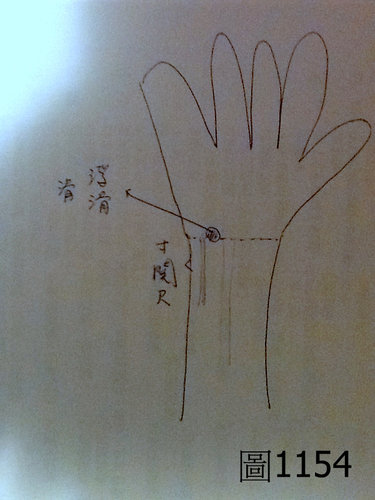

問答錄 222：學中醫如鍊劍
作者：陳建元
Falo 老師您好，請問有些病患再寸部往魚際上一些（腕橫紋之上）有明顯的浮滑脈或滑脈是什麼病機？左右手皆有遇到。有時浮滑到用看的就可看到搏動，有時稍偏內側。（如圖1154）謝謝您^_^

答：如果整條脈是滑脈，或是寸部是滑脈，然後有延伸上去的，那是滑盛而溢出寸部的的意思。
如果此滑圓的脈象和寸部並不互相連接，只是單獨存在而已，則這個脈象通常不列入考慮，當成正常的變異，忽略掉即可。古代雖然有上候上之類的說法，但試驗過並不盡然，或許有的同道會說，也是有準確的時候，但是中醫如果要學得好，並不是所有的古人的東西，都不加揀擇的一律吸收進來，而是要去嚴格的篩選要學習的東西，凡是成熟度不夠的東西，一律捨棄掉，只收集接近100％的成熟技術並將之集合起來，其餘不成熟的都不取，這才是學好中醫的關鍵技巧（也就是寧缺勿濫），雖然只收集接近正確100％的技術，這樣子剛開始比較慢，但每個動作都有把握，每個判斷都敢篤定，這樣子則醫術有憑靠，步步才能踩實，如此醫術才會有堆疊性而能逐漸提高，也即習醫如鍊劍，逐漸鍊去那些雜渣，鐵才會成鋼，才會鍊出好劍。
而如果這些不接近百分之百的東西也通通收進來，則鐵中摻砂，乍看之下洋洋灑灑很華麗，好似博士通一樣，凡是古人講過的不管大的小的，都一律大小通吃一律通通都摻進來，但因為其中的診法，大部分都是未成熟的診法（有些準確度只有20％而已），所以這個無法依賴，那個也無法憑靠，結果還不是臨床百無一用，全是虛招花法而已，所以學中醫的訣竅，在於要去篩選正確的部分和已經成熟的技法來吸收，才有辦法在較短的時間內，習得較佳的醫術，歷代中醫文獻浩如煙海，有些地方已經成熟了，有些地方尚未成熟，有些地方雖然成熟，但只在特定條件下才成立，這些地方都要去篩選，而如果自己無法篩選的話，宜向自己的老師或真的懂這些的醫師請益，否則文獻浩如煙海，對錯相雜，而學錯了又先入為主，則尚未學到正確的，就已經被錯誤的各種說法給淹死在半途中了。
【引用請先來信告知徵求同意，若有涉及販售營利等商業行為，版權所有拷貝盜用必究。】
【藥王脈學講壇】http://blog.xuite.net/drjychen/twblog